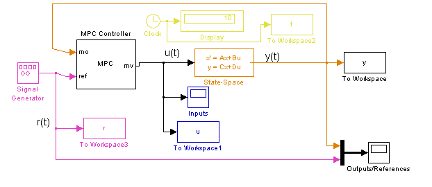
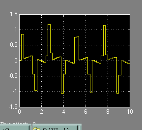
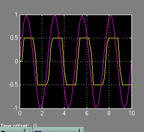

This demonstration shows how generate real-time code from a Simulink diagram containing MPC controllers. We consider here a single-input single-output system tracking of a sinusoid under output constraints.
Author: A. Bemporad
We start defining the plant to be controlled
N1=[3 1]; D1=[1 2*.3 1]; [A,B,C,D]=tf2ss(N1,D1); x0=[0 0]';
Now, setup an MPC controller object
Ts=.2; %Sampling time % Input and output constraints MV=struct('Min',-Inf,'Max',Inf,'RateMin',-20,'RateMax',20); OV=struct('Min',-0.5,'Max',0.5); p=40; m=3; mpccon=mpc(ss(A,B,C,D),Ts,p,m,[],MV,OV);
-->No Weights.ManipulatedVariables specified, assuming default 0.00000 -->No Weights.ManipulatedVariablesRate specified, assuming default 0.10000 -->No Weights.OutputVariables specified, assuming default 1.00000
Simulate using Simulink
Tstop=10; %Simulation time mpc_rtwdemo sim('mpc_rtwdemo',Tstop)
-->Converting model to discrete time. -->Integrated white noise added on measured output channel #1 -->No Model.Noise specified, assuming white noise on each measured output channel
 
Call RTW to compile the Simulink diagram into an executable Change directory to a temp directory so that you have write-permission to generate the relevant target files and the executable.
cwd = pwd; cd(tempdir) try rtwbuild('mpc_rtwdemo') % Run the executable, called mpc_rtwdemo.exe: status = system('mpc_rtwdemo'); end cd(cwd)
### Starting Real-Time Workshop build procedure for model: mpc_rtwdemo ### Generating code into build directory: C:\Temp\mpc_rtwdemo_grt_rtw
If the build finished successfully (status=0) and if you are able to run the executable, you should have a data file named mpc_rtwdemo.mat in your temporary directory. You can load this file and compare the data with that generated by simulating the model mpc_rtwdemo.mdl.